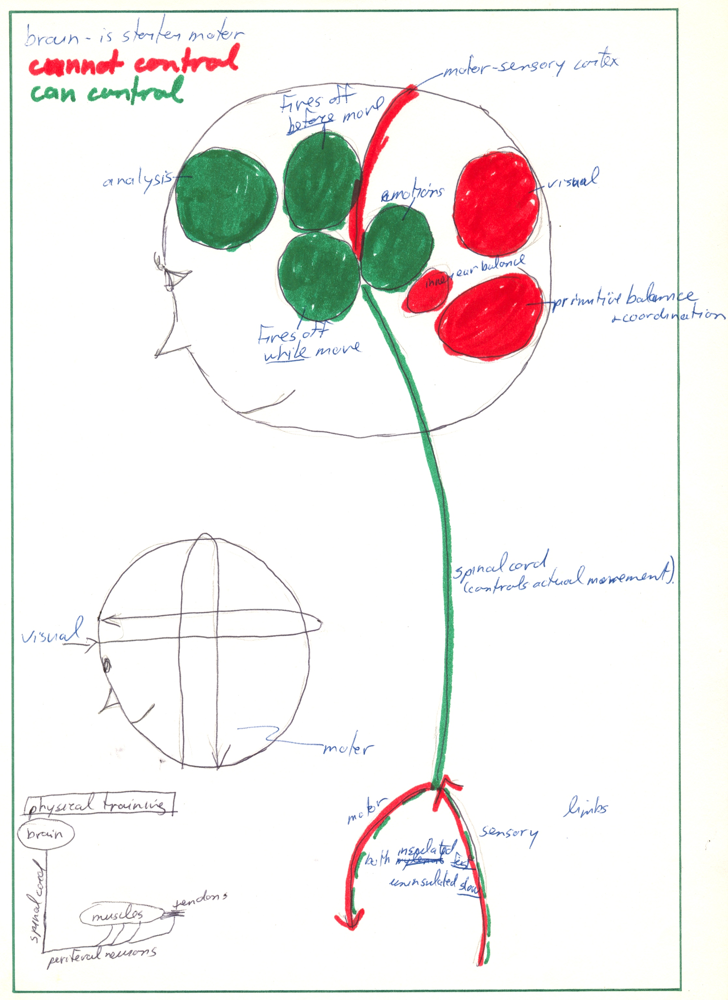

ch3 Summary
POINT FORM SUMMARY
PHYSIOLOGY
- ch3)summary notes
- Physiology of Central Nervous System (CNS)
- Physiology of Peripheral Nervous System (PNS)
- Physiology of Whole Nervous System
- Physical Training
Our nervous system (NS) consists of a central nervous system (CNS) and a peripheral nervous system (PNS).
Physiology of Central Nervous System (CNS)
- brain and spinal cord
- has sympathetic and parasympathetic systems:
- sympathetic gets body to use energy
- parasympathetic gets body to store energy
- cannot fix if damaged
Brain
- is starter motor → sends chunks of information to rest of body
- receives and sorts sensory information
- motor band: Physiologically, there are separate parts of the brain that control different parts of the body. Motor movements of limbs tend to be on top of the band, auditory and sensory on the sides of the band by the ears, and large internal processes requiring muscles to function are between.
Priming:
There is an area in the brain that automatically fires off before you do physical activity. A priming procedure controls how it fires off. If this area is properly primed, the automatic parts of your activity should kick in properly when you start moving (“I feel it, it’s happening”). This is because this area is directly adjacent to a very similar structured area that fires off during a physical activity.
Metabolism:
- If need high concentration (ex ski racing) →
- decrease metabolism of emotional center
- increase metabolism of rest of brain (→efficiency)
- method: distraction of emotions with pre-planed priming rehearsals
- IF need low concentration (ex running) (trance-like state. Eyes half shut. Highly suggestible “just go”) →
- decrease metabolism of emotional center
- decrease metabolism of rest of brain
- method: relaxation procedures
- Positive Mood:
- Effects pathways in brain that increase overall efficiency (ex If engaged →more efficient nervous system)
- Anxiety/Fear:
- see anxiety section
Spinal Cord
There is always a small wait state between the time information is processed in brain, to time when information gets to appropriate point in spinal cord. (i.e. the longer the distance of travel, the longer the wait state.)
Physiology of PNS
Are branching architecture both neurologically and muscularly
Examples:
- move hand and elbow
- move elbow →hand flops. Have to think to tighten hand
- move fingers →rest of arm tightens to support fingers
(do not confuse amount of energy required to move large limbs with the order in which the muscles tighten up)
- quick change in body physiology/position
- method: change by focusing outside→inside
- quick tightening of muscles
- method: focus on most external point you want to tighten first.
- ex skiing on ice: want everything from ankles to buttocks tight, so focus on ankles first, then knees, thighs..
- super human strength
- happens in highly fearful situation. Normally, when muscles tighten, the tendons tighten as well to prevent injuring yourself. During super human strength phenomenon, the neurons attached to these tendons send inhibitory signals instead of excitatory signals; hence the tendons do not tighten.
- increased human strength: safe and realistic
- Increase firing rate via internal concentration of specific muscle group
- Increase number if dendritic connections to muscles via physiotherapy/workouts
Physiology of Whole NS
- Neurons:
- cannot increase speed of firing
can increase frequency of firing → more powerful consequences
- Neurons are always changing form and shape
One can influence this change with concentration techniques, exercise, mood etc.
- SAT (state appropriate transfer):
- The physiological state that your body is in while learning becomes a retrieval cue.
- examples
- If study for exams in jacuzzi → then best recall in jacuzzi
- If coffee in system while train for competition → then best recall with coffee in system.
- Biological clock
- we have daily, monthly, seasonal, yearly biological clocks
- all body processes function best when biological clock is set properly.
- If jet lag → then reset biological clock. Can use melatonin or light therapy to do this.
- Melatonin is a natural supplement that induces sleep. It resets the brain clock but not the body clock.
- Light therapy resets the brain and body clocks. To do this, think of a swing analogy. Stop swing with one burst of light. Set swing into new motion with second burst of light.
Physical Training
- Change number of connections to muscles by concentrating on specific muscle group(s) while training.
- Change the muscle cells themselves by training with distractions (music, video...)
- Muscle endurance important: When have pain, stop messages get sent from brain down to those particular muscle group(s). This is a wired in defense mechanism designed to prevent injury.
Figure 3-10: Summary: Nervous System for Sport

[end of chapter 3 point form summary]
SDCM home
|